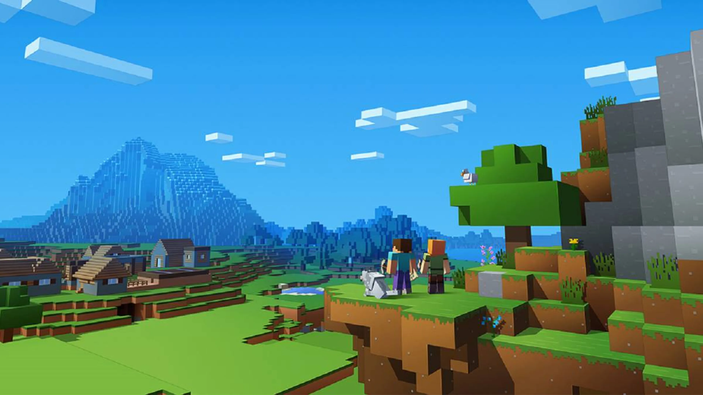

Personajes y Criaturas en Minecraft
Jugadores principales
- Steve: El personaje por defecto masculino, aventurero y capaz de sobrevivir en cualquier entorno.
- Alex: La versión femenina del personaje principal, rápida y ágil.
Criaturas hostiles
Estas criaturas atacan al jugador y pueden ser peligrosas si no se enfrentan con cuidado:
- Creepers: Explosivos silenciosos que dañan estructuras y jugadores.
- Zombis: Hostiles de día y noche que atacan al jugador y a los aldeanos.
- Esqueletos: Usan arcos para atacar desde la distancia.
- Enderman: Teletransportadores que atacan si los miras a los ojos.
- Slimes y Magmas: Bloques gelatinosos que se dividen al morir.
Criaturas neutrales
- Lobos: Se vuelven amigos del jugador si se les alimenta y atacan a enemigos.
- Aldeanos: NPCs que habitan aldeas y pueden comerciar.
- Ocelotes: Gatos salvajes que se pueden domesticar.
- Peces y delfines: Animales acuáticos que enriquecen los biomas de agua.
Criaturas del Nether y End
Estas criaturas solo se encuentran en dimensiones especiales:
- Ghasts: Grandes criaturas voladoras que disparan bolas de fuego en el Nether.
- Blazes: Llamas que disparan fuego y habitan fortalezas del Nether.
- Shulkers: Mob del End que dispara proyectiles y se esconde en bloques.
- Dragón del End: El jefe final del End, considerado el enemigo más poderoso del juego.